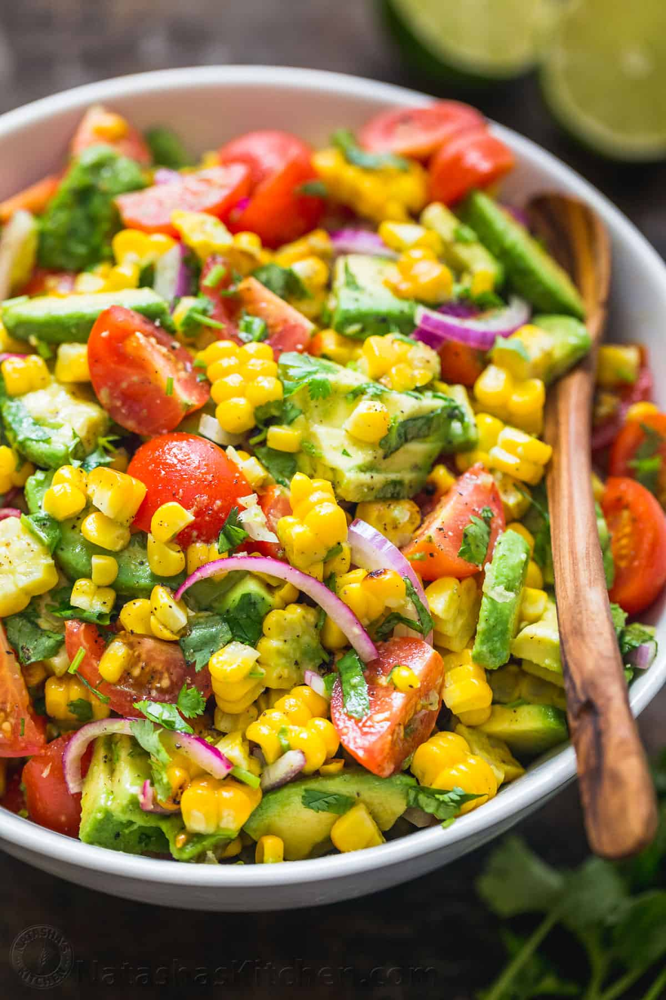

Grilled Summer Salad

This salad is a favorite in the summer heat.
It tastes great prepared fresh or chilled.
The avocado mixes with the dressing and warm ingredients to make the entire salad creamy and flavorful.
Ingredients
- 2-3 ripe avocados
- 3 large chicken breasts
- Carton of grape tomatoes
- 1 red onion
- 2 ears of fresh corn
- Salt
- Lime juice
- Olive oil
- 1 jalapeno
- Cilantro, lime wedges and cotija cheese, if desired
Steps
- Tenderize chicken breasts and toss in olive oil, salt, pepper and desired seasonings (I like blacken seasoning or fajita seasoning) before grilling until internal temperature reaches 165 degrees fahrenheit.
- Grill corn after the chicken, turning as grillmarks appear on corn.
- Toss jalapeno in oil then grill until charred. Wrap in tinfoil until cool and use paper towels to peel off charred skin. Dice jalapeno.
- Prepare dressing by mixing 1/4 cup olive oil, 1/4 cup lime juice, diced jalapeno, salt and pepper.
- Dice red onions. Cut avocados in half, removing pits. Use butter knife to score each half into cubes, then use a spoon to scoop into large bowl.
- Cut cherry tomatoes into halves. If using cilantro, wash and cut into small pieces. Toss into bowl with other ingredients.
- Cut chicken into similarly sized chunks. Use sharp knife to cut corn off of cobs and into chunks as well. Add both to bowl.
- Pour in dressing and toss everything together. Tomatoes and avocados should mix with dressing to make it creamier.
- Sprinkle in cilantro and cotjia if desired. Serve with lime wedges.
Home